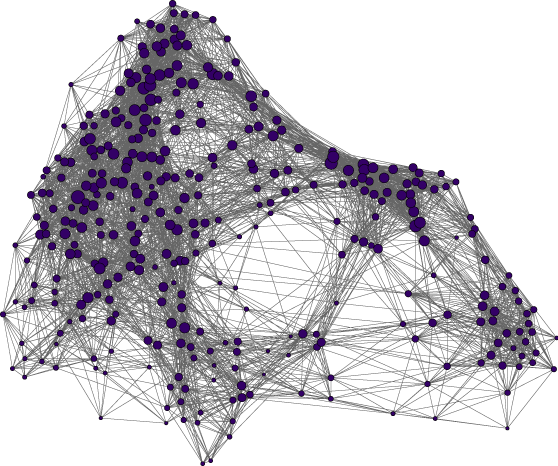
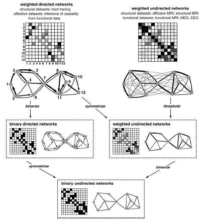
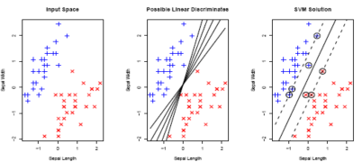
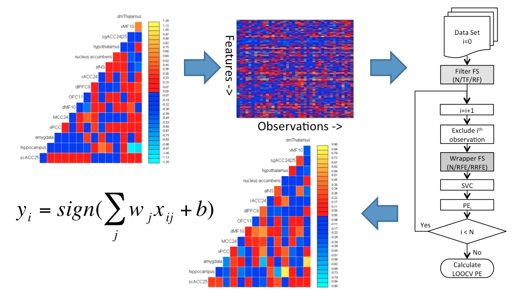
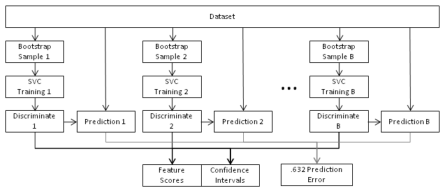
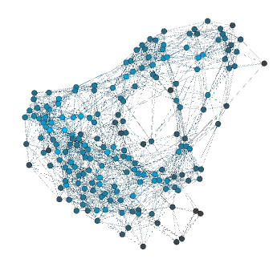
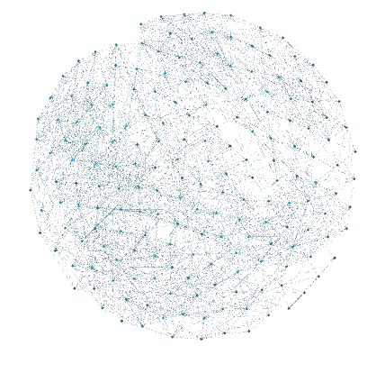
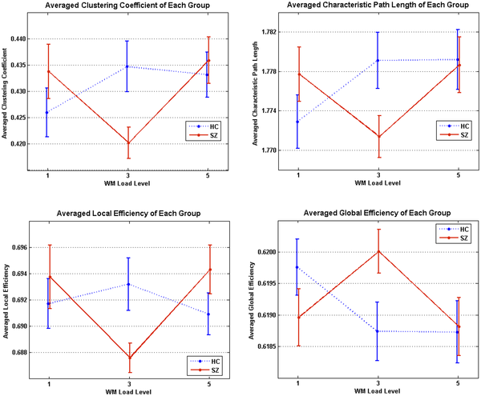
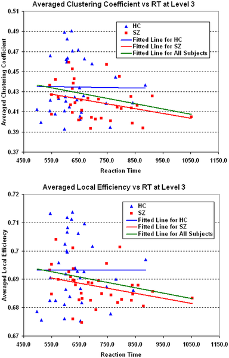

Lecture #4: Comparing connectomes - graph theory, statistical learning, classifiers, and correcting for multiple comparisons
R. Cameron Craddock, PhD Research Scientist VI, Nathan S. Kline Institute for Psychiatric Research, New York, NY Director of Imaging, Child Mind Institute, New York, NY
July 31, 2014
Comparing connectomes
Once we have a connectome graphs for a set of individuals, the next challenge is comparing them
Indentify connections withen the graph, or subgraphs, that vary with disease state or other phenotype

What is a graph?
Mathmatical description of the relationship between ``things''
Consists of nodes and edges
Nodes correspond to brain areas
Edges correspond to connections between brain areas
structural connections from dMRI
functional interactions from fMRI
Graphs derived from fMRI and dMRI data can be treated similarly, except for a few exceptions
Weighted and binarized
Edges in a weighted graph are annotated with a weight that corresponds to the edge strength
No such weighting is used with binarized graphs

Rubinov and Sporns, NeuroImage, 2010.
A note about Thresholding
Although, every node could be connected to every other node, this is not likely the case
Use thresholding to remove unlikely connections due to poor strength or likelihood of error
Thresholding is also necessary for binarizing connections
Sparsity threshold: keep only a fraction of the strongest connections
Significance threshold: remove edges that may have arisen by chance
Although negative correlations can and do arise in functional connectivity, they are hard to interpret in a graph sense and are often removed
Bag of edges
The most obvious is to perform a univariate test on each connectome of the graph
Allows commonly employed statistical tests such as t-tests and general linear models to be employed
The result is a very large number of connections \(\frac{N_{vox}*(N_{vox}-1)}{2}\)
19 900 connections when \(N_{vox}=200\)
As a consequence, their will be a large number of false positives unless a control for multiple comparisons in employed
Another option for bag of edges style analyses take into account interactions between features
Also, estimate the significance of an identified pattern differences based on \(p(\text{disease state}|\text{pattern})\) rather than \(p(\text{pattern}|\text{NULL})\)
Classification

Given a training set of observations and corresponding (categorical) labels, the objective is to find a linear hyperplane that is capable of seperating observations from different categories
For linearly seperable data there are an infinite number of hyperplanes that meet this requirement
Support Vector Classification finds the unique hyperplance that maximizes the perpendicular distance from the hyperplace to the nearest observations of a class (margin)
Train vs. Test
Training is the process of solving a mathmatical algorithm to learn a classifier
Requires: Data + Labels
Results: Model
Testing involves applying the classifier to a never-before-seen dataset to estimate prediction accuracy (or generalization error)
Test and training datasets should be independent to avoid biased estimates of prediction accuracy
Bag of Edges Predictive Modeling

Craddock et al. Magnetic Resonance in Medicine 2009.
Feature Selection
Filter methods: Perform a univariate test at each edge and only include those that pass a liberal threshold (univariate criterion that is not sensitive to multivariate relationships)
Reliability Filter: Estimate bootstrap confidence intervals and exclude features whose 95% CI include zero

Craddock et al. Magnetic Resonance in Medicine 2009.
Connectome Wide Association Studies
Shehzad et al. NeuroImage, 2014.
Graph Invariants
As an alternative, we can reduce the number of tests to one per node or one per graph using graph invariants (complex network measures)
Graph invariants: a property of a graph that does not depend on the graphs represtation or orientation
The same graph can be represented in many different ways

The same graph arranged in two different ways. Created with Gephi.
Node Centrality (Hubbiness)
The relative importance of a node in a network, determined by its connections
Degree: Number of links connected to a node
Closeness Centrality: the average of the inverse distance from the node to all other nodes
Betweenness Centralty: the average length of all shortest paths that pass through a node
Eignevector: average of the centrality measures for the nodes that a target node is connected to
Pagerank Centrality: derives a score based on the number and centrality of the nodes a target node is connected to (Google's algorithm)
Efficiency
Efficiency is a measure of how quickly information can travel between any two nodes in a network
Global efficiency: The average inverse shortest distance between every two points in a network
Local efficiency: the inverse of the average shortest path connecting all neighbors of a vertex.
Small Worldness
Small world graphs, are graphs in which nodes can be quickly reached from every other node by a small number of hops, although the number of edges between nodes is minimized
Clustering Coefficient (C): the number links that exist between a node and its neighbors, divided by all possible links to neighboring nodes
Characteristic Path Length (L): The average of all shortest paths in the network
Small worldness of a network is $S=, where \(C_{rand}\) and \(L_{rand}\) are the clustering coefficient and characteristic path lengths that would have been obtained from randomly generated graphs with the same number of nodes and edges.
if S>1.0 the graph is said to be ``small world'' which means that
its clustering coefficient is higher then expected from a random graph (resilient to point attacks)
its average path length is shorter than expected from a random graph (efficient)
Functional vs. Structural
Since functional interactions do not imply a route or wire between connected regions, path measures don't make since for these graphs
i.e. the fact that A is connected to B and B is connected to C does not imply that information can travel from A to C, if A and C were where functionally connected, their activity would be correlated
This is not the case for structural graphs
Example: Small Worldness in Schizophrenia

Small world properties of funcitonal connectivity networks differ between healthy controls and schizophrenics. He et al. PLoS One 2012.